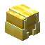

GoldCrate
GoldCrateとはvoteをすることで貰えるアイテムで使用するとランダムで金が貰えます(平均5個)
GoldCrateの亜種
亜種としてGiantGoldCrateというものがあります使い方や見た目変わらずもらえる量が増えるだけです

GoldCrateとはvoteをすることで貰えるアイテムで使用するとランダムで金が貰えます(平均5個)
亜種としてGiantGoldCrateというものがあります使い方や見た目変わらずもらえる量が増えるだけです
